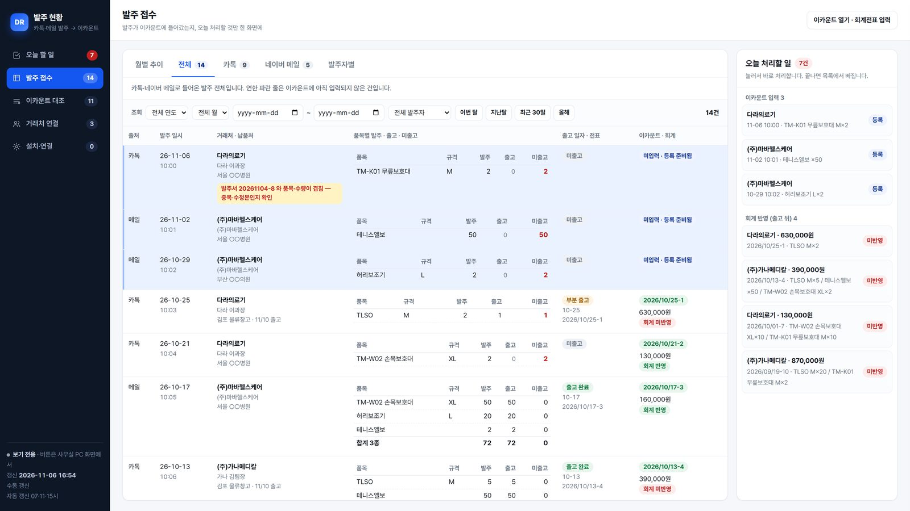
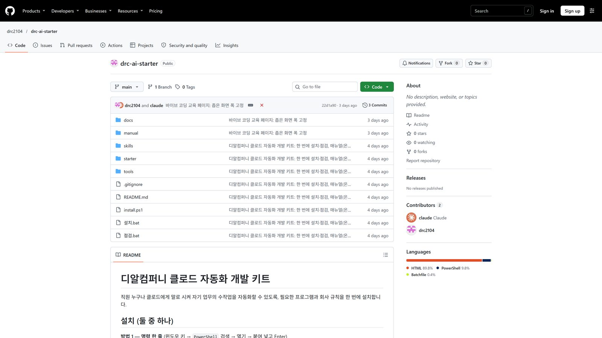
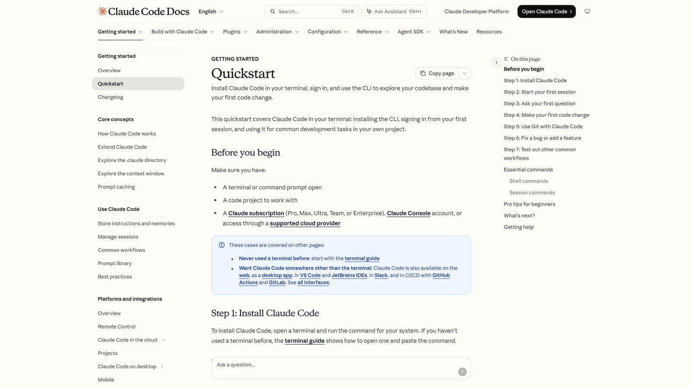
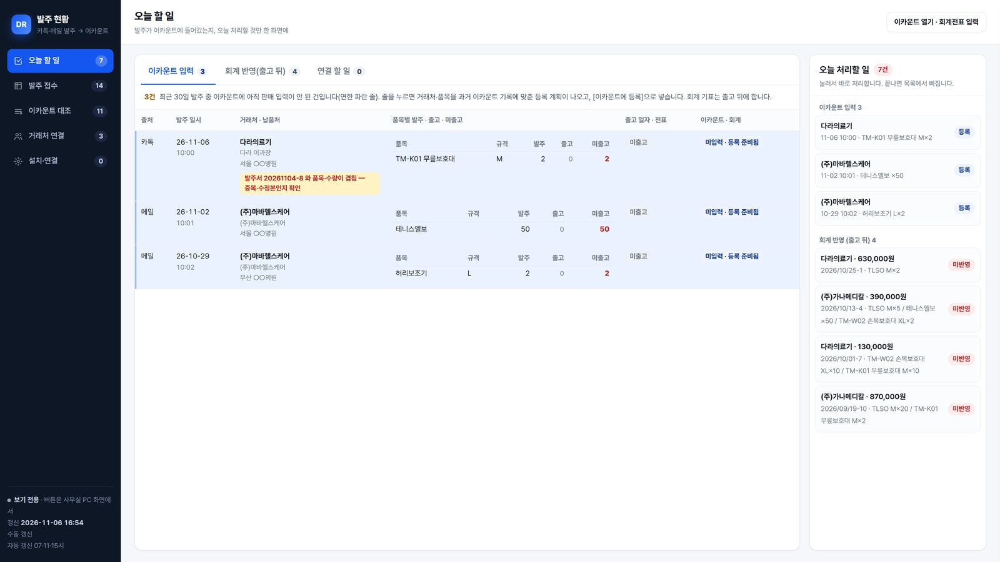
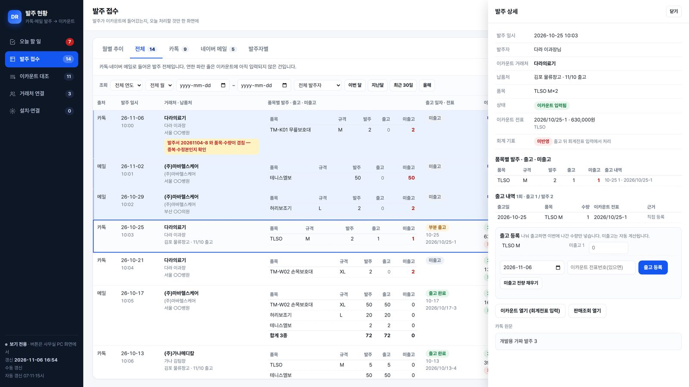
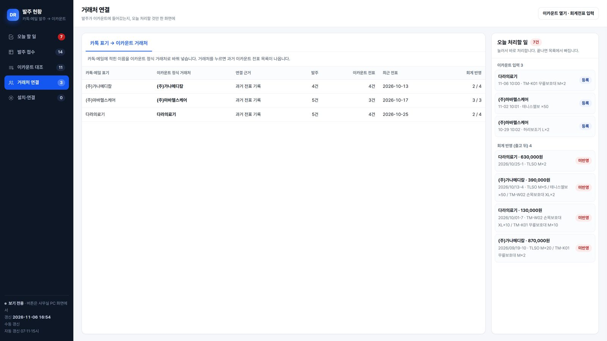
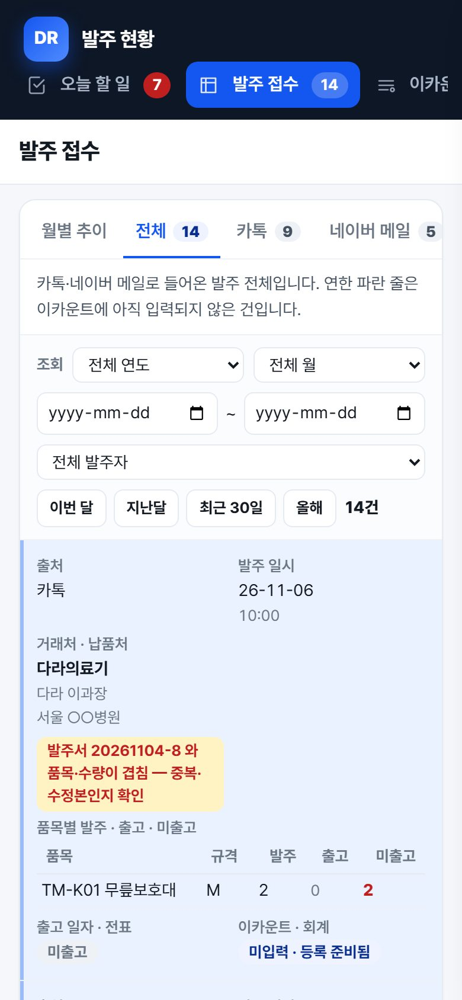

교육 영상 · 클로드 코드로 발주 현황 고치기
영상이 안 나오면 영상만 따로 열기 · 아래 시각을 누르면 그 장으로 갑니다.
| 시각 | 장 | 매뉴얼 묶음 |
|---|---|---|
| 1. 시작하기 | 시작하기 | |
| 2. 설치 · 계정 연결 | 설치 · 계정 연결 | |
| 3. 프로그램 받기 | 프로그램 받기 | |
| 4. 클로드 코드 쓰는 법 | 클로드 코드 쓰는 법 | |
| 5. 고치는 순서 (실습) | 고치는 순서(실습) | |
| 6. 지켜야 할 것 | 지켜야 할 것 | |
| 7. 막혔을 때 · 정리 | 막혔을 때 |
이 매뉴얼을 끝내면, 내가 직접 발주 현황을 고칠 수 있습니다
발주 현황은 카톡·네이버 메일로 들어온 발주가 이카운트에 들어갔는지, 출고·미출고와 회계 반영까지 한 화면에서 보여 주는 회사 프로그램입니다. 매일 쓰는 사람이 불편한 점을 가장 잘 압니다. 그래서 고치는 일도 쓰는 사람이 직접 합니다. 코드는 몰라도 됩니다. 클로드 코드에게 말로 시킵니다.

네 곳이 깃허브로 이어집니다
| 어디 | 누가 | 하는 일 |
|---|---|---|
| 내 PC | 이성빈 주임 | 클로드 코드로 고치고, 가짜 자료로 화면을 확인하고, 깃허브에 올립니다. |
| 깃허브 (인터넷 금고) | — | 프로그램 원본 보관. 누가 언제 무엇을 바꿨는지 모두 남습니다. 비공개 저장소 drc2104/order-hub. |
| 대표 승인 | 대표 | 올라온 변경 요청(Pull request)을 보고 승인합니다. |
| 사무실 PC | — | 실제로 프로그램이 도는 곳. 하루 3번(07·11·15시) 자동 실행. 승인된 판을 업데이트_받기.bat로 받습니다. |
회사 AI 키트 — 명령 한 줄로 전부 설치
클로드 코드, Git, Python, VS Code, 크롬 등 개발에 필요한 프로그램을 한 번에 설치합니다. 이미 설치된 것은 건너뜁니다.
- 윈도우 키를 누르고
PowerShell을 입력 → Windows PowerShell을 엽니다(관리자로 열 필요 없음). - 아래 명령을 복사 버튼으로 복사 → PowerShell 창에 마우스 오른쪽 클릭(붙여넣기) → Enter.
irm https://raw.githubusercontent.com/drc2104/drc-ai-starter/main/install.ps1 | iex
- 설치가 끝날 때까지 창을 닫지 않습니다. 중간에 "설치하시겠습니까?" 창이 뜨면 예.
- 끝나면 PowerShell 창을 닫고 새로 엽니다(새 프로그램을 인식시키기 위해).

설치 확인 — 버전 숫자가 나오면 성공
새 PowerShell 창에서 한 줄씩 넣어 봅니다. 숫자(버전)가 나오면 설치된 것입니다.
git --version python --version claude --version gh --version
| 프로그램 | 하는 일 | 안 나오면 |
|---|---|---|
Claude Code (claude) | 말로 시키면 코드를 읽고·고치고·실행하는 클로드 | irm https://claude.ai/install.ps1 | iex |
| Git | 저장점(되돌리기), 깃허브와 주고받기 | winget install --id Git.Git -e |
| Python | 발주 현황 프로그램이 쓰는 언어 | winget install --id Python.Python.3.14 -e |
GitHub CLI (gh) | 깃허브 로그인·변경 요청(PR) | 키트를 한 번 더 실행 |
클로드 코드 첫 실행 — 브라우저로 로그인
- PowerShell에서
claude를 입력하고 Enter. - 글자 색(테마)을 고르는 화면이 나오면 Enter로 넘깁니다.
- 로그인 방법은 Claude 계정(구독)을 고릅니다 → 브라우저가 열리면 대표님이 알려 준 회사 클로드 계정으로 로그인 → [승인].
- PowerShell로 돌아오면 클로드 코드 화면(
>입력칸)이 나옵니다./exit로 나갑니다.
claude

깃허브 아이디 만들기 → 저장소 초대 수락
- github.com/signup에서 회사 메일로 가입합니다(무료). 메일 → 비밀번호 → 아이디 순서로 넣고, 메일로 온 숫자 코드를 입력합니다.
- 만든 아이디를 대표님께 카톡으로 보냅니다 → 대표님이
drc2104/order-hub에 초대합니다. - 메일함에 온 초대 메일 → View invitation → Accept invitation.
내 PC를 깃허브에 연결 — 처음 한 번
gh auth login
- 질문이 나오면 차례로: GitHub.com → HTTPS → Git 자격 증명 사용 Yes → Login with a web browser.
- 화면에 나온 8자리 코드를 기억 → Enter → 브라우저에서 코드 입력 → [Authorize].
- 확인: 아래 명령에서 Logged in to github.com이 나오면 성공.
gh auth status
- 이름 · 메일 등록(처음 한 번) — 깃허브에 올릴 때 누가 바꿨는지 남는 이름입니다. 따옴표 안을 내 것으로 바꿉니다.
git config --global user.name "이성빈" git config --global user.email "가입한-메일@회사메일.com"
프로그램 받기 (clone) — 처음 한 번
문서 폴더 아래에 order-hub 폴더가 생깁니다. 앞으로 이 폴더에서 일합니다.
cd $HOME\Documents git clone https://github.com/drc2104/order-hub.git cd order-hub
가짜 자료로 화면 띄우기 — 고칠 때마다 이걸로 확인
실제 발주·거래처 자료는 사무실 PC에만 있습니다. 내 PC에서는 가짜 자료를 만들어 화면을 확인합니다.
python -X utf8 tools/sample_db.py $env:ORDER_DB="data\sample.db"; $env:ORDER_DEMO="1" python -X utf8 report.py 개발화면.html start 개발화면.html

폴더 지도 — 외울 필요는 없습니다
클로드 코드가 알아서 찾아 고칩니다. "화면은 report.py" 정도만 알아 두면 충분합니다.
| 파일 | 하는 일 |
|---|---|
report.py | 화면 전체(왼쪽 업무·탭·표·색). 화면을 고치면 대부분 여기 |
run_daily.py | 하루 3번 자동 실행 순서(카톡 → 메일 → 이카운트 → 대조 → 화면) |
mail_reader.py | 네이버 메일 이카운트 발주서 읽기, 발주서 원본 그림 |
match.py · ec_orders.py | 발주 ↔ 이카운트 판매 전표·주문서 대조 |
shipments.py | 품목별 발주·출고·미출고 계산, [출고 등록] |
server.py | 사무실 PC 화면의 버튼 동작 |
rules.json | 거래처·품목 별칭 규칙(예: 카톡에 "가나" → 이카운트 "(주)가나메디칼") |
CLAUDE.md | 클로드 코드가 지키는 규칙(화면 기준·금지 사항). 클로드가 스스로 읽습니다 |
README.md | 프로그램 설명서 |
클로드 코드 켜기 — 반드시 order-hub 폴더에서
cd $HOME\Documents\order-hub claude
╭──────────────────────────────────────╮ │ ✻ Welcome to Claude Code! │ │ cwd: C:\Users\…\Documents\order-hub │ ╰──────────────────────────────────────╯ > 이 프로그램이 뭐 하는 건지 쉽게 설명해 줘
- 처음 켜면 "Do you trust the files in this folder?"(이 폴더를 믿겠습니까?)를 묻습니다 → 1. Yes, proceed.
- > 옆 입력칸에 한국어로 말하듯 적고 Enter.
- 클로드가 파일을 읽고 답합니다. 파일을 고치거나 명령을 실행하기 전에는 허락을 묻습니다(다음 탭).
- 끝낼 때는
/exit또는 Ctrl+C 두 번.
cwd:가 order-hub인지 확인합니다.허락 질문 — 읽고, 맞으면 1번
Edit file report.py 미출고만 모아 보는 탭을 추가합니다 … Do you want to make this edit to report.py? ❯ 1. Yes 2. Yes, allow all edits during this session 3. No, and tell Claude what to do differently (esc)
| 번호 | 뜻 | 언제 |
|---|---|---|
| 1 | 이번 한 번 허락 | 처음엔 항상 이것. 무엇을 바꾸는지 읽고 누릅니다 |
| 2 | 이번 대화 동안 같은 종류는 묻지 않음 | 익숙해진 뒤, 화면 고치기처럼 안전한 일 |
| 3 / Esc | 거절하고 다르게 하라고 말하기 | 엉뚱한 파일을 고치려 하거나, 이카운트에 실제로 저장하려 할 때 |
.env를 열어 보려 할 때, 파일을 지우려 할 때.잘 시키는 말 — 4칸 공식
[재료] 발주 접수 화면, 미출고 수량
[결과물] 발주 접수에 '미출고 남음' 탭 추가, 미출고 많은 순
[확인] 가짜 자료 화면으로 1366·휴대폰 폭 확인
바로 고치지 말고 계획부터 보여 줘.
[목적] [재료] [결과물] [확인] 바로 고치지 말고 계획부터 보여 줘.
| 상황 | 이렇게 말하기 |
|---|---|
| 화면 캡처가 있을 때 | 캡처를 입력칸에 끌어다 놓고 "이 부분 글씨가 잘린다, 고쳐 줘" |
| 결과가 이상할 때 | "방금 바꾼 것 되돌려 줘" — 클로드가 이전 상태로 돌립니다 |
| 무엇을 바꿨는지 모를 때 | "지금까지 바꾼 것을 쉬운 말로 정리해 줘" |
| 오래 대화해서 느려질 때 | /clear 로 새 대화(규칙 CLAUDE.md 는 다시 읽음) |
자주 쓰는 명령 · 키
| 입력 | 하는 일 |
|---|---|
Esc | 클로드가 하던 일을 바로 멈춤(방향이 틀렸을 때) |
Shift+Tab | 모드 바꾸기. 한 번 = 수정 자동 허락(허락 질문이 안 나옴 — 처음엔 쓰지 않기), 두 번 = 계획 모드(고치지 않고 계획만), 세 번 = 원래대로. 화면 아래 표시로 지금 모드를 확인 |
/clear | 대화를 비우고 새로 시작 |
/help | 명령 목록 보기 |
@report.py | 파일을 콕 집어 말하기 — "@report.py 의 탭 색을 바꿔 줘" |
!git status | 앞에 !를 붙이면 명령을 직접 실행 |
/exit | 클로드 코드 끝내기 |
① 고치기 전에 — 최신판 받기
다른 사람이 먼저 고친 것과 겹치지 않게, 시작할 때마다 받습니다.
cd $HOME\Documents\order-hub git checkout main git pull
클로드에게 "최신판 받아 줘"라고 해도 됩니다.
② 실습 — "미출고 남음" 탭 만들기
claude를 켭니다.- 아래 지시문을 그대로 붙여 넣습니다.
[목적] 출고가 덜 된 발주만 빨리 보고 싶다 [재료] 발주 접수 화면, 품목별 미출고 수량 [결과물] 발주 접수 업무에 '미출고 남음' 탭 추가 — 미출고가 1개라도 있는 발주만, 미출고 많은 순 [확인] 가짜 자료로 화면을 만들어 1920·1366·휴대폰 폭에서 확인하고, 결과를 표로 보여 줘 바로 고치지 말고 계획부터 보여 줘.
- 클로드가 계획을 보여 줍니다 → 맞으면 "좋아, 진행해".
- 파일을 고칠 때 허락을 묻습니다 → 내용을 읽고 1.
- 클로드가 CLAUDE.md 규칙대로 화면을 만들어 확인하고 보고합니다.

③ 내 눈으로 확인 — 마지막 판단은 사람이
$env:ORDER_DB="data\sample.db"; $env:ORDER_DEMO="1" python -X utf8 report.py 개발화면.html start 개발화면.html
| 볼 것 | 기준 |
|---|---|
| 한 화면 | 왼쪽 업무 · 위 탭 · 표. 아래로 길게 내려가면 안 됨 |
| 글씨 | 본문 15 · 표 14 · 탭 16 이상, 잘리거나 겹치지 않음 |
| 휴대폰 | 브라우저에서 F12 → 휴대폰 모양 단추 → 390 폭에서 옆으로 넘치지 않음 |
| 숫자 | 왼쪽 숫자 · 탭 숫자 · 표 건수가 서로 맞음 |
이상하면 캡처해서 클로드에게 끌어다 놓고 "여기가 이상하다"고 말합니다.
④ 올리기 — 변경 요청(Pull request)
가장 쉬운 방법: 클로드에게 말합니다.
지금 고친 것을 새 브랜치로 저장하고 깃허브에 Pull request 를 만들어 줘. 제목과 설명은 한국어로, 무엇을 왜 바꿨는지와 확인 결과를 넣어 줘.
직접 하려면:
git checkout -b unchulgo-tab git add -A git commit -m "발주 접수에 미출고 남음 탭 추가" git push -u origin unchulgo-tab gh pr create --fill
.env와 data/는 자동으로 빠집니다(.gitignore).⑤ 승인되면 — 사무실 PC에서 한 번 클릭
- 대표님이 깃허브에서 Pull request 를 확인하고 Merge(합치기)합니다.
- 사무실 PC의 발주 현황 폴더에서
업데이트_받기.bat를 더블클릭합니다. - 새 판을 받고 → 모든 파일 문법을 점검하고 → 화면 서버를 새 코드로 다시 켭니다. 오류가 있으면 이전 판으로 자동으로 되돌립니다.
- 사무실 PC 화면(또는 휴대폰 웹)에서 바뀐 것을 확인합니다.
자료가 흐르는 길
| 상태 | 뜻 |
|---|---|
| 이카운트 입력됨 | 판매 전표와 일자·거래처·품목이 맞음 (= 출고됨) |
| 이카운트 주문서 입력됨 | 주문서로 들어가 있고, 판매(출고)할 때마다 미출고가 줄어듦 |
| 미입력 · 등록 준비됨 | 이카운트에서 아직 못 찾음 → 오늘 할 일 |
| 노란 바탕 빨간 글씨 | 사람이 확인할 것(중복 발주서, 주문서 수량 다름 등) |
화면 — 왼쪽 다섯 업무
| 업무 | 탭 | 무엇을 |
|---|---|---|
| 오늘 할 일 | 이카운트 입력 · 회계 반영 · 연결 할 일 | 지금 처리할 것만 |
| 발주 접수 | 월별 추이 · 전체 · 카톡 · 네이버 메일 · 발주자별 | 기간·발주자 조회, 발주서 원본 보기 |
| 이카운트 대조 | 입력됨 · 회계 미반영 · 지난 발주 대조 안 됨 | 이카운트에 들어갔는지 |
| 거래처 연결 | 카톡 표기 → 이카운트 거래처 | 별칭을 정식 이름으로 |
| 설치·연결 | 연결 상태 · 실행 기록 | 카톡·메일·자동 실행이 살아 있는지 |

휴대폰 웹 — 같은 주소, 보기 전용
https://drc-order.vercel.app — 실적센터와 같은 아이디로 들어갑니다. 하루 3번 자동으로 새로 고쳐집니다. 버튼(이카운트 등록·출고 등록·발주방 고르기)은 사무실 PC 화면에서만 됩니다.

절대 금지 다섯 가지
| # | 하지 말 것 | 이유 |
|---|---|---|
| 1 | 이카운트 판매입력·거래처 등록을 시험으로 실행 | 이카운트 '시험 서버'도 실제 장부에 저장됩니다 |
| 2 | .env·비밀번호·키를 채팅·카톡·깃허브에 | 회사 이카운트·메일이 열립니다 |
| 3 | 자동 입력(auto_register) 켜기 | 대표 확인 후에만 |
| 4 | main에 바로 올리기 · 사무실 PC에서 직접 고치기 | 검토 없이 실제 운영에 들어갑니다 |
| 5 | 메일 읽기 바꾸기(읽음 표시·삭제·이동) | 발주 메일이 사라질 수 있습니다 |
이 규칙은 CLAUDE.md에 들어 있어 클로드도 지킵니다. 그래도 허락 질문에서 사람이 한 번 더 봅니다.
화면 기준 — 대표 지시
- 왼쪽 = 업무, 위 탭 = 업무 안 구분, 탭 첫 줄 = 지금 할 일.
- 한 화면: 아래로 길게 내리는 화면 금지(표 안에서만 스크롤).
- 글씨: 본문 15 · 표 14 · 탭 16 · 보조 13 이상.
- 숫자는 표·그래프로, 문장 나열 금지.
- 확인 표시: 연한 노랑 바탕 + 빨간 글씨.
- 휴대폰 390 폭에서도 옆으로 넘치지 않게.
자주 나는 오류
| 보이는 말 | 원인 | 해결 |
|---|---|---|
| 명령을 찾을 수 없습니다 | 설치 뒤 창을 새로 안 엶 | PowerShell을 닫고 다시 열기, 안 되면 PC 재시작 |
| Repository not found | 깃허브 초대 미수락 · 로그인 안 됨 | 초대 메일 수락 → gh auth login |
| 글자가 깨져 보임(?? 또는 이상한 글자) | 한글 설정 | 명령에 -X utf8을 붙여 실행 |
| ModuleNotFoundError | 파이썬 부품 없음 | pip install openpyxl playwright |
| push 가 거절됨(rejected) | main에 직접 올리려 함 · 최신판 아님 | 브랜치로 올리기, git pull 뒤 다시 |
무엇이든 막히면: 오류 글을 그대로 복사해 클로드에게 "이 오류 해결해 줘"라고 붙여 넣습니다.
되돌리기 — 깃은 시간 여행 장치
| 상황 | 클로드에게 | 직접 |
|---|---|---|
| 저장(commit) 전, 방금 고친 게 이상함 | "방금 바꾼 것 되돌려 줘" | git restore . |
| 저장한 뒤 이전으로 | "마지막 커밋을 되돌려 줘" | git revert HEAD |
| 사무실 PC가 이상해짐 | 대표님께 알림 → 깃허브에서 되돌린 판을 합친 뒤 업데이트_받기.bat | |
근거 · 출처
| 내용 | 근거 |
|---|---|
| 클로드 코드 설치·로그인·명령 | Claude Code 공식 시작 안내 |
| 회사 AI 키트 | drc2104/drc-ai-starter |
| 프로그램 원본·규칙 | 비공개 저장소 drc2104/order-hub — README.md · CLAUDE.md |
| 화면 기준·금지 사항 | 대표 지시(2026-10-19 화면 기준, 2026-11-06 발주 현황) |
화면 캡처는 모두 가짜 자료(예시 거래처)입니다. 작성: 2026-11-06(금) · 디알컴퍼니 2본부 클로드